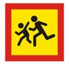
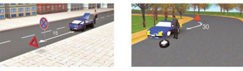

Аварийная сигнализация должна быть включена:
при вынужденной остановке в местах, где остановка запрещена;
при ослеплении водителя светом фар;
при буксировке (на буксируемом механическом транспортном средстве);

при посадке детей в ТС, имеющее опозновательные знаки «Перевозка детей», и высадке из него.
Водитель должен включать аварийную сигнализацию и в других случаях для предупреждения участников движения об опасности, которую может создать транспортное средство.
При остановке транспортного средства и включении аварийной сигнализации, а также при ее неисправности или отсутствии знак аварийной остановки должен быть незамедлительно выставлен:
при дорожно-транспортном происшествии;
при вынужденной остановке в местах, где она запрещена, и там, где с учетом условий видимости транспортное средство не может быть своевременно замечено другими водителями.
пунктов.
пунктов.

Этот знак устанавливается на расстоянии, обеспечивающем в конкретной обстановке своевременное предупреждение других водителей об опасности. Однако это расстояние должно быть не менее 15 м от транспортного средства в населенных пунктах и 30 м — вне населенных
При отсутствии или неисправности аварийной сигнализации на буксируемом механическом транспортном средстве на его задней части должен быть закреплен знак аварийной остановки.